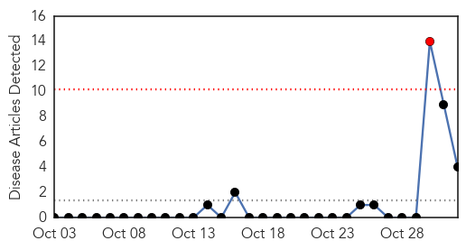
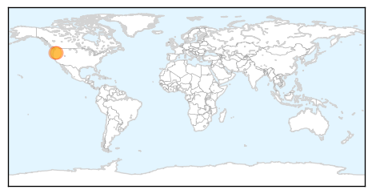
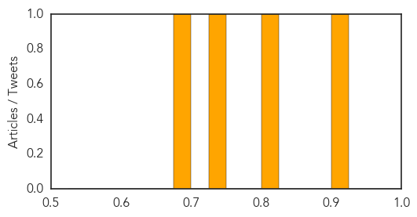
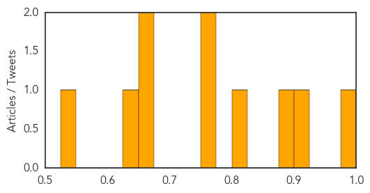

Bubonic Plague
30-Day Web Trend
1 alerts, 0 warnings

30-Day Twitter Trend
1 alerts, 0 warnings

Article Locations
Article Confidences
Top Articles:
Top Tweets:
-
No tweets found for Nov 01, 2015
Dengue Fever
30-Day Web Trend
0 alerts, 0 warnings

30-Day Twitter Trend
2 alerts, 3 warnings

Article Locations

Article Confidences
Top Articles:
- 0.997
- State View: The case of dengue management and its can of worms: The Hindu
- 0.924
- Dengue shock after festival slackness
- 0.890
- Health officials confirm 2 cases of dengue fever
- 0.813
- Flow of dengue patients continues unabated despite fall in temperature
- 0.762
- Mismanaged, short-staffed : Hassanabdal Tehsil Headquarters Hospital in a shambles
- 0.758
- CDA director health’s anti-dengue efforts recognised
- 0.659
- Doctors urge climate action
- 0.651
- Climate deal more important for your health than you realise – WHO
- 0.635
- Minister Holds Field Inspection on Jaya's Order
- 0.526
- At least 20 dengue cases every day in Perak this year
Top Tweets:
- 0.541
- Flavivirus news: Two more dengue deaths reported in Kolkata - TheHealthSite: Two more dengue de... https://t.co/i7itQWc6jd pathogenposse